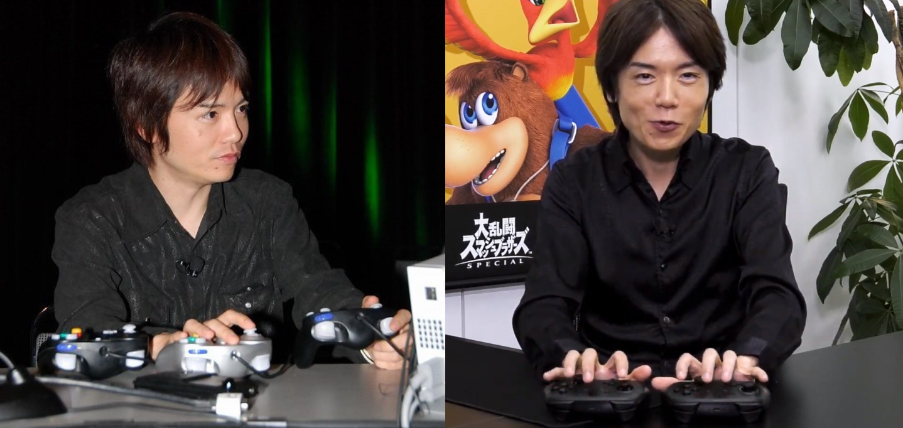

Masahiro Sakurai
He looked at a bunch of a cute Nintendo characters... and decided they should fight to the death.

Young Sakurai on the left playing two characters at once, one per hand. Older Sakurai on the right doing the same almost a decade later.
1970 Born in Tokyo.
1989 Created Kirby and directed first game (Kirbys Dream Land) while working at HAL.
2001 Directed Super Smash Bros. Melee
2008 Directed Super Smash Bros. Brawl
2014 Directed Super Smash Bros. for Wii U and 3DS
2018 Directed Super Smash Bros. Ultimate